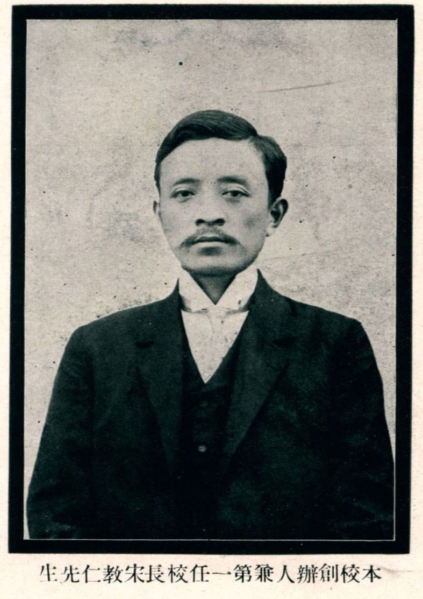
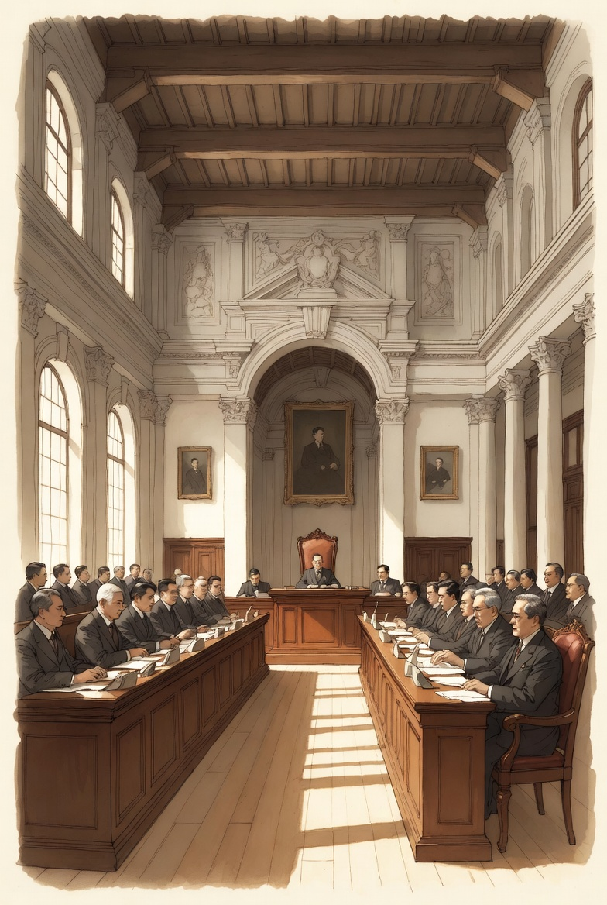

他为什么不是普通的“辛亥人物”


宋教仁当然属于辛亥革命一代，但如果只把他当作“反清革命家”来理解，就会低估他的真正历史位置。对这个专题来说，宋教仁最重要的地方并不在于他参加过革命，而在于他试图把革命后的共和国交给制度、政党和议会去运行。如果说辛亥革命解决的是“旧王朝能否退出”的问题，那么宋教仁面对的则是更难的第二个问题：帝制倒了之后，一个现代共和国究竟怎么治理。
正是在这个意义上，他不只是革命的参与者，更是民初政治转型的关键节点人物。他的目标不是延长非常政治，而是缩短非常政治；不是让国家永远依靠临时让位、南北妥协和个人权威，而是让它转入可以重复、可以更替、可以通过议会竞争来处理分歧的制度政治。因此，他的重要性集中出现在 1912—1913 年，而不是只停留在武昌枪声或同盟会岁月里。
理解宋教仁，可以先抓住四个身份标签
国民党的实际组织者之一
他推动同盟会与其他政治力量整合为国民党，努力把原本偏向革命动员的组织，改造成可以参与国会竞争、承担日常政治责任的公开政党。
责任内阁制的重要倡导者
他强调总统不宜掌握过强实权，主张由国会多数党组建内阁，并让内阁对议会负责。这是他最鲜明的制度主张，也是他后来政治命运的关键所在。
多数组阁路径的推动者
1913 年国会选举后，国民党成为第一大党，宋教仁被普遍看作未来最有可能主导组阁的人。他不是在空谈制度，而是在接近真正实践它。
从革命党到议会政党的代表人物
他代表的是一种转型：革命完成后，不再把“革命本身”当作唯一合法性来源，而要让制度竞争、公开选举与政党政治接管国家运行。
他代表的不是抽象理想，而是一条具体政治道路
宋教仁强调
- 通过国会选举形成多数党。
- 由多数党组建责任内阁。
- 让行政权对议会负责，而不是对强人负责。
- 通过政党竞争、法理规则和制度更替来处理政治冲突。
- 把革命成果沉淀为可重复运作的宪政秩序。
他最担心滑向
- 总统集权和个人权威政治。
- 军人和强力集团决定权力分配。
- 国会成为装饰，议会竞争变成空壳。
- 政治仍靠非常手段而不是制度内更替推进。
- 共和国在名义上成立，却在运作上回到旧式强权逻辑。
这就是为什么宋教仁在 1912—1913 年会迅速成为焦点。因为他推动的，不是口号，而是一条会真正改变权力分配方式的路线：如果这条路线成功，国会多数、责任内阁和政党竞争就会逐步成为国家运转的核心；如果它失败，民初共和就很可能重新滑回强人、军政与非常政治主导的轨道。
为什么他那么强调“责任内阁”
宋教仁著名的一句话是：“内阁不善而可以更迭之，总统不善则无术变易之，如必欲变易之，必致动摇国本。”这句话的重点不只是制度术语，而是一个非常现实的政治判断：如果权力过度集中在总统个人身上，那么一旦总统成为问题，整个国家都会因为“换不掉他”而陷入更大震荡；相反，如果让真正负责施政的内阁对议会负责，那么政府可以更替，国家本身却不必每次都跟着翻覆。
从这个角度看，责任内阁制不是书生式理想，而是试图用制度缓冲政治危机、把对人的斗争转化成对政策和内阁的更替。宋教仁希望把“谁掌权”这个问题，从一场可能引发国家整体震动的总统之争，改造成一场可以通过多数党与议会责任来解决的组阁问题。这是他政治思路里最成熟、也最现代的一部分。
他为什么成为制度冲突的焦点
宋教仁之所以会成为焦点，不只是因为他“很有名”，而是因为他所处的位置太敏感：一方面，他掌握着国民党的组织动员能力，又在国会选举中取得明显优势；另一方面，他主张把这种优势直接转化为对行政权的制度化接管。换句话说，他已经不只是批评现状，而是在准备把另一套规则真正放到权力中心去运行。
对支持议会路线的人而言，他象征着革命之后进入常态政治的希望；对依赖军政实力与总统中心逻辑的人而言，他则意味着现有权力格局将被重写。正因为他既有理论，也有组织力，还有现实上的接近组阁可能性，所以他比许多只停留在思想层面的政治人物更具“现实威胁”。他的危险性，正来自他不是一个空谈宪政的人，而是一个有机会把宪政局部做成现实的人。
围绕宋教仁，我们到底在看什么
围绕宋教仁展开这个专题，真正要看的并不是“一个天才人物如果不死会怎样”的假设史，而是：为什么在民初最接近制度化转折的那个时刻，最鲜明的制度化代表人物会迅速成为冲突中心。也就是说，宋教仁最重要的象征意义，不在于他个人悲剧化的结局，而在于他把一个更大的问题集中呈现出来：辛亥革命之后，中国到底有没有机会把国家从非常政治带入议会政治。
因此，人物篇的意义不只是介绍“宋教仁是谁”，而是帮助读者看见：为什么制度困境会最终表现为一位政治人物的命运；以及，为什么一个看似人物史的问题，实际上连着国家结构、政体选择与政治规则的命运。